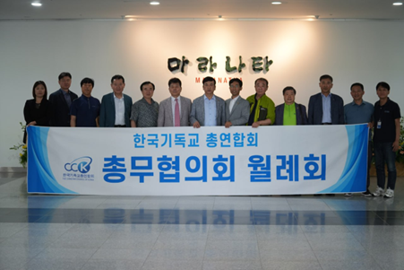

Latest News —
Thousands of Koreans visit Israel in faith-based trip
Read more
Court Delivers Final Acquittal of InterCP on COVID Disinfection Violations
Read more
Rev. Oh Se-hoon: "InterCP Is a Parachurch... It Has Nothing but the Gospel"
Read more
17th Pastors' Mission Conference Held at BTJ Nations Center in Sangju
Read more

CCK General Secretaries' Council Holds Monthly Meeting No. 23-3 at BTJ Nations Center
Read more
Korean Christian Anti-Heresy Council: "Stop the Biased 'Heresy Hunt' Against InterCP"
Read more
See More